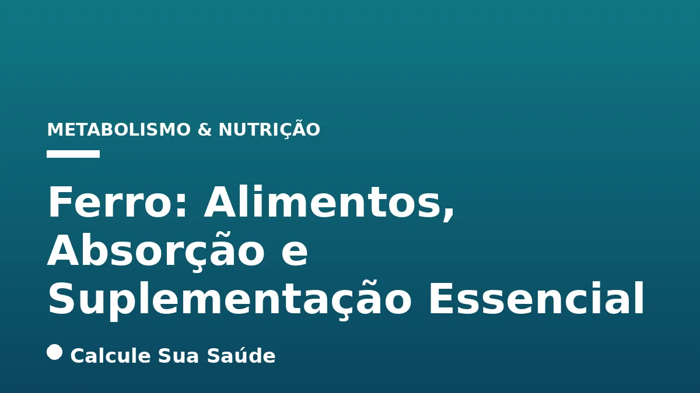

Aviso médico importante
Este conteúdo é educativo e informativo e não substitui a consulta, o diagnóstico ou o tratamento de um profissional de saúde. Em caso de sintomas, procure orientação médica.
Índice do Artigo
- 1. O Que É o Ferro e Por Que Ele É Essencial para a Saúde?
- 2. Anemia Ferropriva: Uma Perspectiva Global e Brasileira
- 3. Causas da Deficiência de Ferro: Um Panorama Abrangente
- 4. Fatores de Risco para a Deficiência de Ferro
- 5. Sintomas da Deficiência de Ferro e Anemia: Sinais de Alerta
- 6. Diagnóstico Preciso da Anemia Ferropriva
- 7. Alimentos Ricos em Ferro: Heme e Não-Heme
- 8. Estratégias para Maximizar a Absorção de Ferro
- 9. Fator Carne
- 10. Inibidores da Absorção de Ferro
- 11. Fortificação de Alimentos: Uma Estratégia de Saúde Pública no Brasil
- 12. Quando a Suplementação de Ferro é Necessária e Recomendada
- 13. Desafios da Suplementação Oral e Abordagens Complementares
- 14. Mitos e Verdades Sobre o Ferro e a Anemia
- 15. Impacto da Deficiência de Ferro no Brasil: Dados Epidemiológicos
- 16. Considerações Finais e a Importância do Acompanhamento Médico
- 17. Perguntas frequentes
O ferro é um dos minerais mais vitais para o funcionamento adequado do corpo humano, desempenhando um papel central em processos biológicos essenciais. Sua importância transcende a simples manutenção da saúde, sendo fundamental para a vida em si. No entanto, a deficiência de ferro, que pode levar à anemia ferropriva, é a carência nutricional mais comum em todo o mundo, afetando milhões de pessoas e representando um sério desafio de saúde pública, especialmente no Brasil.
Compreender como o ferro atua no organismo, quais são as melhores fontes alimentares, como otimizar sua absorção e em que circunstâncias a suplementação se faz necessária é crucial para prevenir e combater essa condição. Este artigo aprofundará os aspectos científicos do ferro, desde sua bioquímica até as estratégias de prevenção e tratamento baseadas em evidências, desmistificando conceitos e fornecendo informações claras e precisas para a sua saúde.
Nosso objetivo é oferecer um guia completo e cientificamente embasado, que permita a você tomar decisões informadas sobre sua nutrição e bem-estar, sempre com o respaldo de um profissional de saúde. Abordaremos as causas, fatores de risco, sintomas, diagnóstico, e as recomendações atuais para a ingestão e suplementação de ferro, com foco nas particularidades da população brasileira.
Em resumo
- O ferro é essencial para o transporte de oxigênio (hemoglobina e mioglobina) e diversas funções celulares.
- A deficiência de ferro é a carência nutricional mais comum globalmente, com alta prevalência no Brasil, especialmente em crianças e mulheres.
- As causas incluem perda de sangue, dieta inadequada, aumento das necessidades (gravidez, crescimento) e má absorção.
- Sintomas como fadiga, palidez e dificuldade de concentração são comuns, e o diagnóstico é feito por exames de sangue, como hemoglobina e ferritina sérica.
- Alimentos de origem animal (ferro heme) são mais bem absorvidos que os de origem vegetal (ferro não-heme), mas a vitamina C potencializa a absorção do ferro não-heme.
- A suplementação é recomendada profilaticamente para grupos de risco (bebês, gestantes) e terapeuticamente para deficiências confirmadas, sempre sob orientação médica.
1. O Que É o Ferro e Por Que Ele É Essencial para a Saúde?
O ferro é um mineral traço indispensável para a vida, atuando como cofator em centenas de enzimas e proteínas envolvidas em processos metabólicos cruciais. Sua função mais conhecida e vital é como componente central da hemoglobina, a proteína presente nos glóbulos vermelhos. A hemoglobina é a principal responsável pelo transporte de oxigênio dos pulmões para todos os tecidos e órgãos do corpo, garantindo que as células recebam o suprimento necessário para a produção de energia e suas funções específicas. Sem ferro suficiente, o transporte de oxigênio é comprometido, levando a uma série de disfunções sistêmicas.
Além da hemoglobina, o ferro também é um constituinte fundamental da mioglobina, uma proteína encontrada nas células musculares que armazena oxigênio, permitindo que os músculos funcionem eficientemente durante a atividade física. Sua presença é igualmente crítica para o crescimento e desenvolvimento celular, a síntese de DNA, a produção de hormônios, a formação de tecido conjuntivo e o funcionamento do sistema imunológico. O ferro participa ainda da cadeia de transporte de elétrons nas mitocôndrias, essencial para a respiração celular e a geração de ATP, a moeda energética do corpo.
Armazenamento e Regulação do Ferro no Organismo
O corpo humano possui mecanismos sofisticados para regular a absorção, o transporte e o armazenamento do ferro, mantendo um equilíbrio delicado. O ferro é armazenado principalmente no fígado, baço e medula óssea, sob a forma de proteínas como a ferritina e a hemossiderina. A ferritina sérica é um marcador importante dos estoques de ferro do organismo, e seus níveis são frequentemente utilizados no diagnóstico da deficiência de ferro. A hepcidina, um hormônio peptídico produzido no fígado, desempenha um papel central na regulação sistêmica do ferro, controlando sua absorção intestinal e sua liberação dos estoques. A compreensão desses mecanismos é fundamental para entender as causas e o tratamento das disfunções relacionadas ao ferro.
2. Anemia Ferropriva: Uma Perspectiva Global e Brasileira
A anemia é definida como uma condição em que os níveis de hemoglobina no sangue estão abaixo dos valores de referência considerados normais para a idade, sexo e estado fisiológico do indivíduo. Dentre os diversos tipos de anemia, a anemia ferropriva (ADF), ou anemia por deficiência de ferro, é de longe a mais prevalente, sendo reconhecida como a carência nutricional mais comum em escala global. Estima-se que afete cerca de um terço da população mundial, com impactos significativos na saúde pública, especialmente em países em desenvolvimento.
No Brasil, a anemia ferropriva representa um problema nutricional de grande magnitude. Dados epidemiológicos revelam uma alta prevalência, particularmente em grupos vulneráveis. A Pesquisa Nacional de Demografia e Saúde (PNDS) de 2006 indicou que 20,9% das crianças menores de 5 anos apresentavam anemia, o que correspondia a aproximadamente 3 milhões de crianças brasileiras na época. Embora estudos mais recentes, como o Estudo Nacional de Alimentação e Nutrição Infantil (ENANI) de 2020, tenham apontado uma queda na prevalência nacional para 18,9% entre lactentes, a situação ainda é preocupante e exige vigilância contínua. Em mulheres, a PNDS 2006 avaliou uma prevalência de anemia de 29,4% no país.
As consequências da anemia ferropriva são multifacetadas e afetam a qualidade de vida e o desenvolvimento socioeconômico. Em crianças, pode comprometer o desenvolvimento cognitivo e motor, reduzir a capacidade de aprendizado e aumentar a suscetibilidade a infecções. Em adultos, leva à diminuição da produtividade no trabalho, fadiga crônica e redução da capacidade física. Em gestantes, está associada a desfechos adversos como prematuridade, baixo peso ao nascer e maior risco de mortalidade materna e infantil. A persistência desses índices elevados no Brasil sublinha a necessidade de estratégias eficazes de prevenção, diagnóstico e tratamento.
3. Causas da Deficiência de Ferro: Um Panorama Abrangente
A deficiência de ferro não é uma condição isolada, mas sim o resultado de um desequilíbrio entre a ingestão, a absorção e as perdas de ferro no organismo. Suas causas são variadas e frequentemente multifatoriais, exigindo uma investigação cuidadosa para um manejo eficaz.
Perda Sanguínea Crônica
Em adultos, a perda de sangue é a causa mais comum de deficiência de ferro. Essa perda pode ser óbvia ou oculta, e sua identificação é crucial para o tratamento. As principais fontes incluem:
- Menstruação Intensa (Menorragia): Mulheres em idade fértil são particularmente suscetíveis devido à perda mensal de sangue.
- Sangramentos Gastrointestinais: Úlceras pépticas, pólipos, doenças inflamatórias intestinais (como doença de Crohn e retocolite ulcerativa), infecção por Helicobacter pylori, verminoses e, em casos mais graves, câncer colorretal, podem causar perdas crônicas de sangue. Em homens e mulheres pós-menopausa, a deficiência de ferro é frequentemente um sinal de alerta para hemorragia gastrointestinal, exigindo investigação endoscópica.
- Sangramentos Urogenitais e Traumas: Outras fontes menos comuns, mas relevantes, incluem sangramentos do trato urinário ou perdas significativas devido a traumas.
Ingestão Dietética Insuficiente
Uma dieta pobre em alimentos ricos em ferro, ou com baixa biodisponibilidade do mineral, é uma causa primária, especialmente em crianças e em populações com acesso limitado a alimentos nutritivos. Dietas vegetarianas e veganas, se não forem bem planejadas, podem apresentar maior risco devido à dependência de ferro não-heme, que é menos absorvível.
Aumento das Necessidades Fisiológicas
Certos períodos da vida exigem uma demanda significativamente maior de ferro, e a não adequação da ingestão pode levar à deficiência:
- Crianças e Adolescentes: Períodos de rápido crescimento aumentam a necessidade de ferro para a expansão do volume sanguíneo e o desenvolvimento tecidual.
- Gravidez e Lactação: A gestação eleva drasticamente a necessidade de ferro para suprir o desenvolvimento fetal, a formação da placenta e o aumento do volume sanguíneo materno. A lactação também impõe uma demanda adicional.
Má Absorção de Ferro
Algumas condições médicas podem comprometer a capacidade do intestino de absorver o ferro, mesmo com uma ingestão adequada:
- Doença Celíaca: A inflamação e o dano à mucosa intestinal prejudicam a absorção de nutrientes, incluindo o ferro.
- Doença Inflamatória Intestinal: Condições como doença de Crohn e retocolite ulcerativa podem afetar a absorção e também causar perda sanguínea.
- Gastrite Atrófica Autoimune: Reduz a produção de ácido gástrico, essencial para a liberação do ferro dos alimentos e sua conversão em uma forma absorvível. Para mais informações sobre condições gástricas, consulte nosso artigo sobre Gastrite: Causas, Sintomas, Tipos e Alimentação.
- Cirurgia Bariátrica: Procedimentos que alteram a anatomia do trato gastrointestinal, como a cirurgia bariátrica, podem desviar o alimento da porção do intestino onde a absorção de ferro é mais eficiente. Para saber mais sobre este procedimento, veja Cirurgia Bariátrica: Tipos, Indicações e Acompanhamento.
- Uso de Medicamentos Antiácidos: O uso prolongado de inibidores de bomba de prótons (IBPs) ou outros antiácidos pode reduzir a acidez gástrica e, consequentemente, a absorção de ferro.
4. Fatores de Risco para a Deficiência de Ferro
A deficiência de ferro não afeta a população de forma homogênea. Existem grupos específicos que, devido a características fisiológicas, dietéticas ou condições de saúde, apresentam um risco significativamente maior de desenvolver essa carência. A identificação desses fatores de risco é fundamental para a implementação de medidas preventivas e diagnósticos precoces.
Grupos Vulneráveis
- Crianças: Especialmente menores de 2 anos, prematuros e aqueles com baixo peso ao nascer. O rápido crescimento na infância e a transição da dieta láctea para alimentos sólidos podem expor as crianças a um risco aumentado se a ingestão de ferro não for adequada.
- Mulheres em Idade Fértil: Devido à perda sanguínea menstrual regular, que pode ser exacerbada em casos de menorragia.
- Gestantes: A demanda por ferro aumenta drasticamente durante a gravidez para suprir as necessidades do feto, da placenta e o aumento do volume sanguíneo materno. Uma gestante sem anemia necessita de aproximadamente 1.000 mg de ferro adicional, enquanto uma gestante com anemia pode precisar de mais de 2.500 mg.
- Idosos: Podem apresentar maior prevalência de deficiência de ferro, muitas vezes associada a condições crônicas, má nutrição, uso de medicamentos que afetam a absorção ou sangramentos gastrointestinais.
- Veganos e Vegetarianos: Devido à dependência exclusiva de ferro não-heme, que possui menor biodisponibilidade e é mais suscetível à interferência de inibidores dietéticos. Um planejamento alimentar cuidadoso é essencial para esses grupos.
- Atletas de Alto Rendimento: Podem ter necessidades aumentadas de ferro devido a perdas pelo suor, micro-hemorragias gastrointestinais induzidas pelo exercício intenso e maior demanda para a produção de glóbulos vermelhos.
Condições Médicas e Cirúrgicas
- Doenças Crônicas: Condições como doença renal crônica, doenças inflamatórias (artrite reumatoide, lúpus), infecções crônicas, diabetes e câncer podem levar à anemia de doença crônica, que muitas vezes coexiste com a deficiência de ferro ou dificulta sua avaliação.
- Cirurgia Bariátrica: Como mencionado, procedimentos que alteram o trato gastrointestinal podem comprometer a absorção de ferro de forma significativa, exigindo monitoramento e suplementação contínuos.
- Doenças Gastrointestinais: Condições como doença celíaca, doença inflamatória intestinal e infecção por Helicobacter pylori afetam a absorção ou causam perda de ferro.
5. Sintomas da Deficiência de Ferro e Anemia: Sinais de Alerta
Os sintomas da deficiência de ferro e da anemia ferropriva geralmente se desenvolvem de forma gradual, muitas vezes passando despercebidos nas fases iniciais. À medida que a deficiência se agrava, os sinais e sintomas tornam-se mais evidentes e podem impactar significativamente a qualidade de vida do indivíduo. É importante estar atento a esses indicadores e procurar avaliação médica ao primeiro sinal.
Manifestações Comuns da Deficiência de Ferro
- Cansaço Excessivo e Fraqueza Generalizada: É o sintoma mais comum e frequentemente o primeiro a ser notado. A fadiga ocorre devido à redução do transporte de oxigênio para os tecidos, comprometendo a produção de energia.
- Palidez Cutânea e das Mucosas: A diminuição da hemoglobina, que confere a cor vermelha ao sangue, resulta em palidez visível na pele, nas mucosas (especialmente na parte interna das pálpebras e gengivas) e nas unhas.
- Tontura, Sensação de Desmaio e Dor de Cabeça: A oxigenação insuficiente do cérebro pode levar a esses sintomas, que podem ser mais proeminentes ao se levantar rapidamente.
- Dificuldade de Concentração e Lapsos de Memória: O comprometimento da função cognitiva é uma consequência da baixa oxigenação cerebral, afetando o desempenho acadêmico e profissional.
- Unhas Fracas e Quebradiças: Conhecidas como coiloníquia (unhas em formato de colher), são um sinal mais avançado da deficiência de ferro.
- Pele Seca e Queda de Cabelo: A deficiência de ferro pode afetar a saúde da pele e dos folículos capilares, levando a ressecamento e perda de cabelo.
- Vontade de Comer Substâncias Não Nutritivas (Pica): Um sintoma peculiar, mas característico, é o desejo de ingerir gelo, terra, argila, amido de milho ou arroz cru.
- Síndrome das Pernas Inquietas: Caracterizada por uma necessidade irresistível de mover as pernas, frequentemente acompanhada de sensações desconfortáveis, que pioram em repouso.
- Disneia (Falta de Ar) e Palpitações: Em casos mais graves, o coração precisa trabalhar mais para compensar a baixa oxigenação, levando a taquicardia e, em situações extremas, insuficiência cardíaca.
- Edema de Tornozelo: Pode ocorrer em casos avançados de anemia, como resultado da sobrecarga cardíaca.
| Sinal/Sintoma | Descrição | Gravidade |
|---|---|---|
| Fadiga e Fraqueza | Cansaço persistente, falta de energia | Leve a Grave |
| Palidez | Pele, mucosas e unhas pálidas | Moderada a Grave |
| Tontura/Cefaleia | Sensação de desmaio, dores de cabeça | Leve a Moderada |
| Dificuldade de Concentração | Lapsos de memória, baixa produtividade | Leve a Moderada |
| Unhas Quebradiças (Coiloníquia) | Unhas finas, côncavas, em forma de colher | Moderada a Grave |
| Pica | Desejo por substâncias não alimentares (gelo, terra) | Moderada a Grave |
| Síndrome das Pernas Inquietas | Necessidade incontrolável de mover as pernas | Moderada a Grave |
| Falta de Ar/Palpitações | Dificuldade para respirar, coração acelerado | Grave |
6. Diagnóstico Preciso da Anemia Ferropriva
O diagnóstico da deficiência de ferro e da anemia ferropriva exige uma combinação de avaliação clínica dos sintomas e exames laboratoriais específicos. A interpretação desses resultados deve ser feita por um profissional de saúde, que considerará o quadro geral do paciente.
Exames Laboratoriais Essenciais
- Hemoglobina (Hb): A medição dos níveis de hemoglobina é o ponto de partida para o diagnóstico de anemia. Valores abaixo dos limites de referência para idade e sexo indicam anemia.
- Ferritina Sérica: Este é o principal indicador dos estoques de ferro do organismo. Valores de ferritina sérica menores que 12 ng/mL praticamente confirmam o diagnóstico de anemia ferropênica. No entanto, é crucial lembrar que a ferritina é uma proteína de fase aguda, o que significa que seus níveis podem estar elevados em condições de inflamação, infecção, doenças hepáticas ou câncer, mesmo na presença de deficiência de ferro. Nesses casos, outros marcadores devem ser avaliados.
- Parâmetros do Eritrograma: O hemograma completo fornece informações valiosas sobre as características dos glóbulos vermelhos. Na anemia ferropriva, é comum observar:
- Microcitose: Glóbulos vermelhos menores que o normal (VCM - Volume Corpuscular Médio baixo).
- Hipocromia: Glóbulos vermelhos com coloração mais clara que o normal (HCM - Hemoglobina Corpuscular Média baixa), indicando menor conteúdo de hemoglobina.
- Anisocitose: Variação no tamanho dos glóbulos vermelhos (RDW - Amplitude de Distribuição dos Glóbulos Vermelhos elevada).
- Saturação da Transferrina e Ferro Sérico: Embora menos específicos que a ferritina, esses exames também podem auxiliar no diagnóstico. A saturação da transferrina (proteína que transporta o ferro no sangue) tende a ser baixa na deficiência de ferro, enquanto o ferro sérico pode estar diminuído.
A Importância da Investigação da Causa Subjacente
Um aspecto fundamental no diagnóstico da deficiência de ferro, especialmente em homens e mulheres pós-menopausa, é a investigação da causa subjacente. Nesses grupos, a deficiência de ferro raramente é apenas de origem dietética e frequentemente indica uma perda sanguínea crônica, sendo a hemorragia gastrointestinal a causa mais comum. A não identificação e tratamento da fonte de sangramento pode levar à recorrência da deficiência e à progressão de doenças mais graves, como câncer colorretal. Para um aprofundamento nos sinais e diagnóstico, consulte nosso artigo sobre Anemia Ferropriva: Sinais e Diagnóstico.
7. Alimentos Ricos em Ferro: Heme e Não-Heme
A dieta é a principal fonte de ferro para o organismo, e a escolha de alimentos ricos nesse mineral é a base para a prevenção da deficiência. O ferro presente nos alimentos pode ser classificado em duas formas principais, com diferentes características de absorção:
Ferro Heme: A Biodisponibilidade Superior
O ferro heme é encontrado exclusivamente em alimentos de origem animal. Ele é parte integrante da hemoglobina e da mioglobina dos animais, o que explica sua presença em carnes. Esta forma de ferro é a mais facilmente absorvida pelo organismo humano, com uma biodisponibilidade que varia entre 20% e 25%, e sua absorção é menos influenciada por outros componentes da dieta.
- Fontes Ricas em Ferro Heme:
- Carnes Vermelhas: Fígado (considerado uma das melhores fontes), coração, rins e outras miudezas, além de cortes magros de carne bovina e suína.
- Aves: Carne de frango e outras aves, especialmente as partes mais escuras.
- Peixes: Peixes como sardinha, atum e salmão também são boas fontes.
Ferro Não-Heme: Fontes Vegetais e Desafios de Absorção
O ferro não-heme é a forma predominante de ferro na dieta e é encontrado tanto em alimentos de origem vegetal quanto em alguns produtos de origem animal (como ovos). Sua absorção é significativamente menor do que a do ferro heme, variando de 2% a 10%, e é fortemente influenciada pela presença de outros componentes da dieta, tanto promotores quanto inibidores.
- Fontes Ricas em Ferro Não-Heme:
- Leguminosas: Feijão (preto, carioca, fradinho), lentilha, grão-de-bico, ervilha e soja.
- Vegetais Verde-Escuros: Couve, espinafre, rúcula, brócolis, agrião.
- Cereais Fortificados: Muitos cereais matinais e farinhas são enriquecidos com ferro.
- Frutas Secas: Uva passa, damasco seco.
- Sementes e Oleaginosas: Sementes de abóbora, gergelim, castanhas.
- Ovos: A gema do ovo contém ferro não-heme.
- Beterraba: Embora popularmente associada ao ferro, a beterraba não é uma fonte tão concentrada quanto as leguminosas ou vegetais verde-escuros.
8. Estratégias para Maximizar a Absorção de Ferro
Dado que a biodisponibilidade do ferro, especialmente o não-heme, pode ser limitada, é crucial adotar estratégias dietéticas que otimizem sua absorção. A combinação inteligente de alimentos pode fazer uma grande diferença na prevenção da deficiência.
Potencializadores da Absorção de Ferro
- Vitamina C (Ácido Ascórbico): A ingestão de vitamina C junto com alimentos ricos em ferro não-heme é a estratégia mais eficaz para aumentar sua absorção. A vitamina C converte o ferro férrico (Fe+++), menos absorvível, em ferro ferroso (Fe++), que é mais prontamente absorvido no intestino.
- Fontes de Vitamina C: Frutas cítricas (laranja, acerola, limão, caju, morango, abacaxi, maracujá), pimentões (vermelho e amarelo), tomate, goiaba, kiwi e brócolis. Recomenda-se consumir um copo de suco de laranja ou uma fruta cítrica junto com uma refeição rica em ferro não-heme.
- Fator Carne (Aminoácidos Sulfurados): Presente na carne, peixe e aves, o
9. Fator Carne
não apenas fornece ferro heme, mas também contém aminoácidos sulfurados que promovem a absorção do ferro não-heme quando consumidos na mesma refeição. Isso explica por que a adição de uma pequena porção de carne a uma refeição vegetariana pode melhorar significativamente a absorção de ferro de origem vegetal.10. Inibidores da Absorção de Ferro
Alguns componentes dietéticos podem inibir a absorção de ferro, especialmente o não-heme. É aconselhável evitar o consumo desses alimentos junto com refeições ricas em ferro, ou consumi-los em horários separados:
- Fitatos: Encontrados em grãos integrais, leguminosas e algumas sementes. A remolha e o cozimento de leguminosas, bem como a fermentação de grãos (como no pão de fermentação natural), podem reduzir o teor de fitatos.
- Oxalatos: Presentes em vegetais como espinafre, ruibarbo e beterraba.
- Taninos e Polifenóis: Abundantes em chá (preto, verde), café, cacau e vinho tinto. Recomenda-se evitar o consumo dessas bebidas durante as refeições principais.
- Cálcio: O cálcio, presente em laticínios e suplementos, pode inibir a absorção de ferro. É preferível consumir alimentos ricos em cálcio em refeições diferentes das ricas em ferro, ou com um intervalo de algumas horas.
Alimento/Nutriente Efeito na Absorção de Ferro Recomendação Ferro Heme (Carnes, Peixes, Aves) Alta absorção (20-25%), pouco influenciada. Consumir regularmente. Ferro Não-Heme (Leguminosas, Vegetais) Baixa absorção (2-10%), muito influenciada. Combinar com Vitamina C e/ou Fator Carne. Vitamina C (Frutas Cítricas, Pimentão) Aumenta absorção de ferro não-heme. Consumir junto com fontes de ferro não-heme. Fator Carne (Carnes, Peixes, Aves) Aumenta absorção de ferro não-heme. Incluir pequena porção em refeições vegetarianas. Fitatos (Grãos integrais, Leguminosas) Inibe absorção de ferro não-heme. Remolhar e cozinhar leguminosas; fermentar grãos. Taninos/Polifenóis (Chá, Café, Vinho) Inibe absorção de ferro não-heme. Evitar consumo durante as refeições ricas em ferro. Cálcio (Laticínios, Suplementos) Inibe absorção de ferro (ambos os tipos). Consumir em horários separados das refeições ricas em ferro. 11. Fortificação de Alimentos: Uma Estratégia de Saúde Pública no Brasil
A fortificação de alimentos é uma estratégia de saúde pública reconhecida mundialmente para combater deficiências nutricionais em larga escala. No Brasil, o Ministério da Saúde e a Agência Nacional de Vigilância Sanitária (ANVISA) implementaram uma política de fortificação obrigatória das farinhas de trigo e milho com ferro e ácido fólico. Essa medida visa prevenir a anemia ferropriva e reduzir a incidência de doenças do tubo neural, uma vez que o ácido fólico também é crucial para o desenvolvimento neurológico.
Desde 2004, a legislação brasileira exige que as farinhas de trigo e milho comercializadas no país sejam enriquecidas com 4 a 9 mg de ferro para cada 100g de produto. Essa estratégia alcança grande parte da população, pois esses alimentos são amplamente consumidos em diversas regiões e classes sociais. A fortificação tem demonstrado ser uma intervenção custo-efetiva na redução da prevalência de anemia em populações, complementando as recomendações de uma dieta equilibrada.
Embora a fortificação seja uma ferramenta poderosa, ela não substitui a necessidade de uma alimentação variada e rica em nutrientes. É um complemento importante que ajuda a garantir uma ingestão mínima de ferro para a população em geral, mas não elimina a necessidade de atenção individualizada, especialmente para grupos de risco ou em casos de deficiência já estabelecida. A qualidade da dieta, incluindo a presença de Alimentos Ultraprocessados: Riscos e Identificação, também impacta a saúde nutricional geral e a absorção de micronutrientes.
12. Quando a Suplementação de Ferro é Necessária e Recomendada
A suplementação de ferro é uma intervenção terapêutica ou profilática crucial em diversas situações, mas deve ser sempre orientada por um profissional de saúde. O uso indiscriminado de suplementos pode ser prejudicial, pois o excesso de ferro também pode causar problemas de saúde.
Suplementação Profilática
A suplementação profilática visa prevenir a deficiência de ferro em grupos de alto risco, antes que a anemia se instale:
- Crianças: O Ministério da Saúde e a Sociedade Brasileira de Pediatria (SBP) recomendam a suplementação profilática de ferro elementar para bebês a termo e com peso adequado. A dose sugerida é de 10 a 12,5 mg/dia, iniciada aos 6 meses de vida, em dois ciclos de três meses, com um intervalo de três meses entre eles. Para lactentes prematuros ou com baixo peso ao nascer, a suplementação pode ser iniciada a partir do 30º dia após o nascimento, com doses específicas e individualizadas, devido ao maior risco de deficiência precoce.
- Gestantes: Todas as gestantes devem receber suplementação de ferro e ácido fólico, conforme as diretrizes do pré-natal. A dose e a duração são estabelecidas pelo médico, considerando o estado nutricional e a presença de anemia prévia.
- Mulheres no Pós-Parto e Pós-Aborto: Recomenda-se a suplementação de 40 mg de ferro elementar diariamente até o terceiro mês após o parto ou aborto, para repor as perdas sanguíneas e restaurar os estoques de ferro.
- Outros Grupos de Risco: Atletas de alto rendimento, indivíduos com dietas vegetarianas ou veganas mal planejadas, e pacientes submetidos a cirurgia bariátrica podem necessitar de suplementação profilática, conforme avaliação individual.
Suplementação Terapêutica
Para o tratamento da deficiência de ferro e da anemia ferropriva já estabelecidas, a suplementação oral de ferro é a abordagem de primeira linha:
- Sais de Ferro Orais: Geralmente são prescritos suplementos de ferro por via oral. Os sais ferrosos (Fe++), como sulfato ferroso, fumarato ferroso e gluconato ferroso, são mais prontamente absorvidos e eficazes do que os sais férricos (Fe+++). O sulfato ferroso é o mais comum e custo-efetivo.
- Dose e Administração: A dose mínima utilizada para suplementação de ferro elementar no tratamento da anemia é de 60 mg por dia. Em muitos casos, doses maiores podem ser necessárias, fracionadas ao longo do dia para melhorar a tolerância. A suplementação deve ser tomada preferencialmente com o estômago vazio ou com alimentos cítricos (ricos em vitamina C) para facilitar a absorção. Deve-se evitar o consumo concomitante com leite, café ou chá.
- Duração do Tratamento: O tratamento da anemia ferropriva é prolongado. Após a normalização dos níveis de hemoglobina, a suplementação deve continuar por pelo menos 3 a 6 meses para repor os estoques de ferro (ferritina). O monitoramento laboratorial é essencial para guiar a duração do tratamento.
- Ferro Intravenoso: Em casos de má absorção grave, intolerância aos sais orais, doença inflamatória intestinal ativa, doença renal crônica ou anemia grave com necessidade de rápida correção, o ferro intravenoso pode ser indicado.
13. Desafios da Suplementação Oral e Abordagens Complementares
Apesar da eficácia comprovada da suplementação oral de ferro no tratamento da deficiência, a adesão ao tratamento pode ser um desafio significativo. Os sais de ferro, especialmente em doses elevadas, podem causar efeitos colaterais gastrointestinais que levam muitos pacientes a interromper o uso.
Efeitos Colaterais e Estratégias para Melhorar a Adesão
- Efeitos Gastrointestinais: Os efeitos colaterais mais comuns incluem náuseas, dor abdominal, constipação ou diarreia, e escurecimento das fezes. Estima-se que 15% a 20% dos pacientes experimentem esses sintomas, o que pode comprometer a adesão ao tratamento.
- Estratégias para Reduzir Efeitos Colaterais:
- Redução da Dose: Em alguns casos, iniciar com uma dose menor e aumentá-la gradualmente pode melhorar a tolerância.
- Tomar com Alimentos: Embora a absorção seja melhor com o estômago vazio, tomar o suplemento com uma pequena refeição (sem laticínios, café ou chá) pode reduzir os sintomas gastrointestinais.
- Troca de Sal de Ferro: Experimentar diferentes sais de ferro (por exemplo, gluconato ferroso em vez de sulfato ferroso) pode ser útil, pois a tolerância varia entre os indivíduos.
- Formulações de Liberação Lenta: Algumas formulações são projetadas para liberar o ferro mais lentamente, o que pode diminuir os efeitos colaterais.
Terapias Não Farmacológicas e Intervenções Dietéticas
Revisões sistemáticas e meta-análises têm demonstrado que medidas não farmacológicas, como intervenções dietéticas e educação nutricional, podem ser um complemento valioso aos programas de prevenção e tratamento da anemia ferropriva. Essas abordagens podem aumentar os níveis de hemoglobina e reduzir a prevalência de anemia, especialmente em comunidades com recursos limitados.
- Educação Nutricional: Ensinar sobre fontes alimentares de ferro, combinações que otimizam a absorção (ferro não-heme com vitamina C) e inibidores da absorção é fundamental.
- Diversificação da Dieta: Incentivar o consumo de uma variedade de alimentos ricos em ferro, tanto heme quanto não-heme, é essencial.
- Programas de Fortificação: Como discutido, a fortificação de alimentos básicos é uma estratégia populacional eficaz.
É importante ressaltar que, embora as intervenções dietéticas sejam cruciais para a prevenção e como complemento, elas geralmente não são suficientes para corrigir uma deficiência de ferro já estabelecida, que requer suplementação terapêutica sob supervisão médica.
14. Mitos e Verdades Sobre o Ferro e a Anemia
A deficiência de ferro e a anemia ferropriva são condições cercadas por muitos mitos e informações incorretas. Esclarecer esses pontos é fundamental para promover a saúde baseada em evidências e evitar práticas inadequadas.
Mito 1: Anemia é sempre um sinal de má alimentação.
Verdade: Embora a má alimentação seja a principal causa de anemia em crianças e um fator contribuinte em adultos, a anemia em adultos raramente é causada apenas por fatores alimentares. Muitas vezes, é um sinal de condições subjacentes mais sérias, como inflamação crônica, infecções, gastrite, doença renal, câncer ou sangramento gastrointestinal. A investigação da causa é crucial.
Mito 2: Toda anemia tem origem genética.
Verdade: Mito. Existem diversos tipos de anemia. Algumas são hereditárias (como a anemia falciforme ou talassemias), mas a anemia ferropriva, que é a mais comum, não tem origem genética. Ela resulta da insuficiência de ferro no organismo, seja por ingestão inadequada, má absorção ou perda sanguínea. Existem também anemias por falta de produção (como deficiência de vitamina B12) ou por destruição de glóbulos vermelhos.
Mito 3: Crianças e adultos anêmicos são proibidos de praticar esportes.
Verdade: Mito. A falta de disposição e o cansaço são sintomas comuns da anemia, o que pode dificultar a prática de exercícios. No entanto, não há uma proibição médica geral. A capacidade de praticar esportes depende do grau da anemia, da condição cardíaca do paciente e da orientação do médico. Em muitos casos, atividades leves a moderadas podem ser mantidas, e a melhora da anemia pode restaurar a capacidade física.
Mito 4: Toda pessoa precisa de suplementação de ferro.
Verdade: Mito. A suplementação de ferro é recomendada principalmente para quem apresenta deficiência comprovada ou pertence a grupos de alto risco (como gestantes, bebês, mulheres com fluxo menstrual intenso, pessoas que passaram por cirurgia bariátrica e alguns atletas de alto rendimento ou veganos). O excesso de ferro pode ser prejudicial, levando a condições como hemocromatose (acúmulo de ferro nos órgãos), que pode danificar o fígado, coração e pâncreas. A avaliação por um profissional de saúde, com base em exames laboratoriais, é fundamental antes de iniciar qualquer suplementação.
Mito 5: O ferro engorda.
Verdade: Mito. Suplementos de ferro não contêm calorias e, portanto, não têm impacto direto no ganho de peso. Em pessoas anêmicas, a melhora da deficiência pode restaurar o apetite e a disposição física, o que, por sua vez, pode levar a um aumento na ingestão calórica e na massa muscular, resultando em ganho de peso. No entanto, esse é um efeito indireto da melhora da saúde, não do ferro em si.
Mito 6: Todo suplemento de ferro causa efeitos colaterais.
Verdade: Mito. Embora efeitos colaterais gastrointestinais (como náuseas, constipação ou diarreia) sejam comuns em 15% a 20% dos pacientes que usam suplementos de ferro, nem todos os indivíduos os experimentam. A tolerância varia, e a escolha do tipo de sal de ferro, a dose e a forma de administração (com ou sem alimentos) podem influenciar a ocorrência e a intensidade desses efeitos. Existem estratégias para minimizar esses desconfortos, como iniciar com doses menores ou usar formulações de liberação lenta.
15. Impacto da Deficiência de Ferro no Brasil: Dados Epidemiológicos
A deficiência de ferro e a anemia ferropriva continuam sendo um desafio significativo de saúde pública no Brasil, com dados que refletem a persistência da condição em grupos vulneráveis, apesar de algumas melhorias ao longo dos anos. A compreensão desses dados é essencial para direcionar políticas e intervenções eficazes.
Prevalência em Crianças
As crianças, especialmente os lactentes e pré-escolares, são um dos grupos mais afetados. A Pesquisa Nacional de Demografia e Saúde (PNDS) de 2006 revelou que 20,9% das crianças menores de 5 anos no Brasil apresentavam anemia. Alguns estudos regionais no país chegaram a identificar prevalências superiores a 50% em crianças. Mais recentemente, o Estudo Nacional de Alimentação e Nutrição Infantil (ENANI) de 2020 indicou uma queda na prevalência nacional de anemia para 18,9% entre lactentes, sugerindo um avanço, mas ainda apontando para um problema considerável.
Prevalência em Mulheres
Mulheres em idade fértil e gestantes também são altamente vulneráveis. A PNDS 2006 avaliou uma prevalência de anemia de 29,4% em mulheres no país. A perda sanguínea menstrual e as demandas fisiológicas da gravidez são os principais fatores que contribuem para essa alta prevalência.
Internações e Óbitos por Anemia Ferropênica
O impacto da anemia ferropênica na saúde pública pode ser observado também nos dados de internações hospitalares. Entre 2018 e 2022, o Brasil registrou um total de 135.502 internações hospitalares decorrentes de anemia ferropênica, com o maior número de casos em 2019. Curiosamente, o sexo feminino foi prevalente nas internações, enquanto o sexo masculino teve mais incidências de óbitos nesse período, o que pode indicar diferenças nas causas subjacentes ou na gravidade da condição entre os sexos.
Em 2023, houve um aumento progressivo no número de internações, com 29% dos 52.667 casos registrados entre 2020-2023. A região Sudeste foi a mais acometida, respondendo por 41,6% dos casos, o que pode estar relacionado à densidade populacional e à complexidade dos sistemas de saúde locais.
Tendência da Prevalência
Apesar dos desafios, há uma tendência de melhora na prevalência de anemia ferropriva no Brasil. Entre 1990 e 2019, a prevalência passou de 18,2% para 13,4%. Essa redução, embora positiva, indica que a deficiência de ferro permanece um problema de saúde pública que exige atenção contínua e estratégias multifacetadas, incluindo educação nutricional, fortificação de alimentos e acesso a serviços de saúde para diagnóstico e tratamento.
16. Considerações Finais e a Importância do Acompanhamento Médico
O ferro é, sem dúvida, um pilar fundamental para a saúde e o bem-estar. Sua deficiência, amplamente prevalente no Brasil e no mundo, acarreta consequências sérias que afetam o desenvolvimento, a produtividade e a qualidade de vida. Desde o transporte de oxigênio até o funcionamento celular, o papel desse mineral é insubstituível.
A prevenção da deficiência de ferro começa com uma alimentação equilibrada e rica em fontes de ferro heme e não-heme, aliada a estratégias para otimizar sua absorção, como o consumo de vitamina C. A fortificação de alimentos básicos, como as farinhas, representa uma importante medida de saúde pública para garantir uma ingestão mínima para a população. No entanto, para grupos de risco e em casos de deficiência já estabelecida, a suplementação de ferro, seja profilática ou terapêutica, torna-se indispensável.
É crucial reforçar que qualquer intervenção, seja dietética ou por meio de suplementos, deve ser sempre acompanhada e orientada por um profissional de saúde. A automedicação com ferro pode levar a riscos de toxicidade e mascarar condições subjacentes mais graves. A investigação da causa da deficiência, o diagnóstico preciso e o plano de tratamento individualizado são etapas que somente um médico pode conduzir adequadamente. Priorize sua saúde e busque sempre o aconselhamento profissional para garantir que suas necessidades de ferro sejam atendidas de forma segura e eficaz.
17. Perguntas frequentes
Quais são os principais sintomas da deficiência de ferro?
Os principais sintomas incluem cansaço excessivo, fraqueza generalizada, palidez da pele e mucosas, tontura, dor de cabeça, dificuldade de concentração, unhas fracas e quebradiças, queda de cabelo e, em casos mais graves, vontade de comer substâncias não nutritivas (pica) e síndrome das pernas inquietas.Qual a diferença entre ferro heme e ferro não-heme?
O ferro heme é encontrado em alimentos de origem animal (carnes, peixes, aves) e é mais facilmente absorvido pelo organismo. O ferro não-heme é encontrado em alimentos de origem vegetal (leguminosas, vegetais verde-escuros) e em ovos, e sua absorção é menor e mais influenciada por outros componentes da dieta.Como posso melhorar a absorção de ferro de origem vegetal?
Para melhorar a absorção do ferro não-heme, consuma alimentos ricos em vitamina C (como laranja, acerola, limão) junto com a refeição. A presença de aminoácidos sulfurados (o 'fator carne') também pode potencializar a absorção, mesmo em pequenas quantidades.Quem precisa de suplementação de ferro?
A suplementação de ferro é recomendada profilaticamente para bebês, gestantes, mulheres no pós-parto/pós-aborto e, em alguns casos, para atletas de alto rendimento ou veganos com dieta inadequada. Para o tratamento da deficiência já estabelecida, a suplementação é essencial, sempre sob orientação e acompanhamento médico.O excesso de ferro pode ser prejudicial?
Sim, o excesso de ferro pode ser prejudicial. O acúmulo de ferro no organismo (hemocromatose) pode danificar órgãos como fígado, coração e pâncreas. Por isso, a suplementação deve ser feita apenas com indicação e acompanhamento de um profissional de saúde, após avaliação dos níveis de ferro no sangue.A anemia é sempre causada por má alimentação?
Não, embora a má alimentação seja uma causa comum, especialmente em crianças, a anemia em adultos frequentemente indica outras condições subjacentes, como perda de sangue crônica (gastrointestinal ou menstrual), doenças inflamatórias, infecções ou problemas de má absorção. É crucial investigar a causa da anemia com um médico.Por que a ferritina é importante no diagnóstico da deficiência de ferro?
A ferritina sérica é o principal indicador dos estoques de ferro do organismo. Níveis baixos de ferritina (<12 ng/mL) confirmam a deficiência de ferro. No entanto, a ferritina é uma proteína de fase aguda, e seus níveis podem estar elevados em casos de inflamação ou infecção, mesmo na presença de deficiência de ferro, exigindo uma interpretação cuidadosa.O que são os sais ferrosos e férricos na suplementação?
Os sais ferrosos (Fe++) são a forma de ferro mais prontamente absorvida pelo organismo, sendo os mais utilizados na suplementação oral (ex: sulfato ferroso). Os sais férricos (Fe+++) são menos absorvíveis e, por isso, menos eficazes para o tratamento da deficiência de ferro.Leia também
Referências e Fontes
1. Ministério da Saúde - Portal Gov.br. Deficiência de Ferro. Disponível em: gov.br
2. Dr. Gustavo de Oliveira. Mitos e verdades sobre a Anemia Ferropriva. Disponível em: gustavooliveirahemato.com.br
3. SciELO. Prevenção e tratamento da anemia nutricional ferropriva: novos enfoques e perspectivas. Disponível em: scielo.br
4. SciELO. Anemia ferropênica no adulto: causas, diagnóstico e tratamento. Disponível em: scielo.br
5. Editora Pasteur. Capítulo 04 ANEMIA FERROPRIVA. Disponível em: sistema.editorapasteur.com.br
6. Sociedade Brasileira de Pediatria (SBP). Prevenção e tratamento da anemia ferropriva. Disponível em: sbp.com.br
7. Ministério da Saúde - Portal Gov.br. Anemia por Deficiência de Ferro (PC-DDT). Disponível em: gov.br
8. Laboratório Bioanálise. Mito ou verdade: descubra 5 fatos sobre a anemia. Publicado em 12 de junho de 2023. Disponível em: bioanaliseoc.com.br